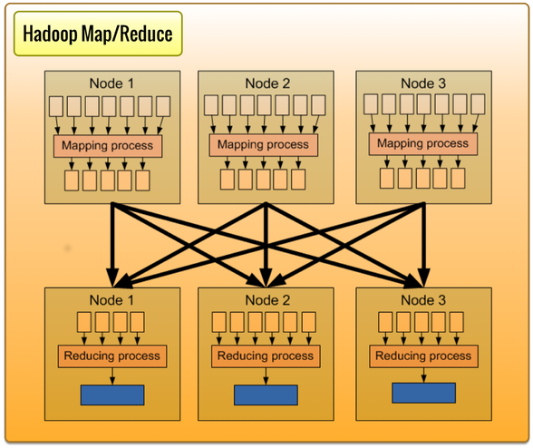

Hadoop

The Vital Platform uses Hadoop for large-scale data processing, including
machine learning analysis.
Data stored in HBase is available for analysis using Map/Reduce jobs, as
is data from application events (such as log data), typically written to HDFS.
A Vital Flow, initiated via DataScript, may trigger a Map/Reduce job.
The output of a machine learning job is a learned model. The model is
loaded into a Vital Flow step which can be used in Vital Flows in
categorization.